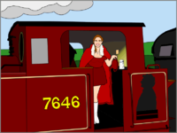
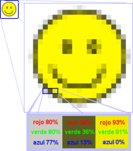
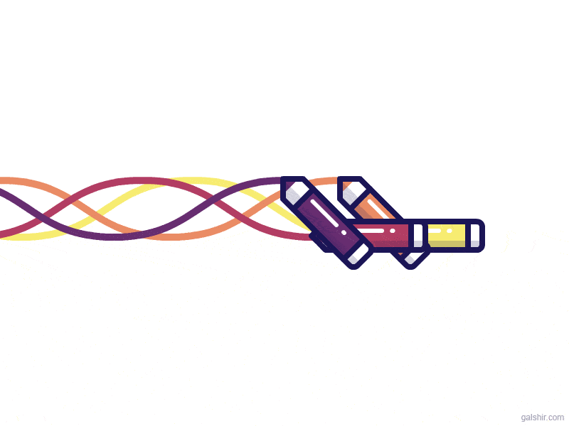

1 Tipos de imagenes:
1-1 Vectoriales y mapa de bits:
Vectoriales
Una imagen vectorial es una imagen digital. La misma se encuentra formada por figuras geométricas
independientes como pueden ser polígonos, arcos entre otros y cada uno de estos se le definirá
como distintos atributos matemáticos como son la forma, el color y la posición.

Las imágenes de mapa de bits o bitmaps se codifican en una matriz de puntos sobre la que se ordenan
los bits de información que representan el color de cada píxel.
La cantidad de información empleada para definir a cada píxel determina la calidad del color que una
imagen bitmap puede tener.

2 - Formatos de imágenes
2-1 Relacion calidad-peso:
Relación calidad y su “peso”:
Muchos de nosotros hemos visto y sufrido la ralentización de las páginas web con muchas imágenes,
o el sufrimiento, al igual que un correo electrónico con una sesión informativa fotográfica,
parece que nunca se descarga.El concepto y la expresión que usamos cuando hablamos de imágenes es el
tamaño.
2-2 - Formatos web: “jpg”, “gif”, “png”
JPG
jpg son las siglas de Joint Photographic Experts Group, el nombre del grupo que creó este formato.
jpg es un formato de compresión de imágenestanto en color como en escala de grises, con alta calidad
(a todo color).
un gif consiste en una serie de fotogramas que se suceden entre sí,
creando una animación sin sonido que se repite en forma de bucle entre
5 y 10 segundos .Estos cuentan con un máximo de 256 colores

PNG (Portable Network Graphics ó Gráficos de Red Portátiles) es un formato gráfico basado en un
algoritmo
de compresión sin pérdida para bitmaps no sujeto a patentes.

3 - Software para procesar imágenes:
3-1 photoshop
Photoshop
es un editor de fotografías desarrollado por Adobe Systems Incorporated, que su uso principal se
basa para el retoque de fotografías y de gráficos. Fue creado en 1986 por los hermanos Knoll.
Photoshop puede editar y componer imágenes rasterizadas
y soporta varios modelos de colores: RGB, CMYK, CIELAB, colores sólidos y semitonos.
GIMP (siglas en inglés de GNU Image Manipulation Program) es un programa de edición de imágenes
digitales en
forma de mapa de bits, tanto dibujos como fotografías. Es un programa libre y gratuito. GIMP tiene
herramientas
que se utilizan para el retoque y edición de imágenes, dibujo de formas libres, cambiar el tamaño,
recortar, hacer fotomontajes,
convertir a diferentes formatos de imagen, y otras tareas más especializadas.
4 - Optimización de imágenes para la web:
4-1 Concepto Resolución
Resolución
La resolución de una imagen es el número de píxeles por pulgada (1 pulgada = 2,54 cm),
se expresa en PPP (puntos por pulgada en español) o DPI (puntos por pulgada en inglés),
por ejemplo, una resolución de 300 ppp significa que la imagen contiene 300 píxeles de ancho y 300
píxeles de alto,
por lo que consta de 90.000 píxeles Pixel (300x300 dpi).
4-2 Concepto Profundidad del color o paleta de colores
Profundidad del color o paleta de colores
La profundidad de color se refiere a la cantidad de bits necesarios para codificar
y guardar La información de color de cada píxel de la imagen.
Un punto es una ubicación de almacenamiento, puede tener el valor 0 o 1.
5 - Herramientas de optimización de imágenes:
5-1 Herramientas específicas de procesos de optimización y reducción de tamaño (además de las
que vistas en la pregunta anterior
CANVA PHOTO EDITOR
Este es un editor de imágenes gratis. Permite crear, colocar filtros de imagen, voltear,
ajustar, hacer zoom, colocar iconos, texto en diferentes fuentes.
Comprime y reduce el peso de la imagen gratis. TinyPNG utiliza tecnología de compresión
para reducir el tamaño de los archivos PNG y JPEG.
6 - Inclusión de imágenes en la web. Etiqueta IMG:
6-1 Distinguir entre imágenes de contenido e imágenes de adorno
Imágenes de contenido e imágenes de adorno
Las imágenes de contenido son las que proporcionan información y complementan la información
textual.
Las imágenes de adorno son las que se utilizan para hacer bordes redondeados, para mostrar pequeños
iconos en las listas de elementos, para mostrar fondos de página, etc. Las imágenes de contenido
se incluyen directamente en el código HTML mediante la etiqueta img y las imágenes de adorno no
se deberían incluir en el código HTML, sino que deberían emplearse hojas de estilos CSS para
mostrarla.